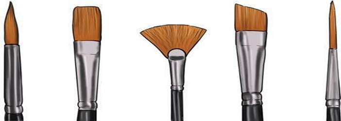
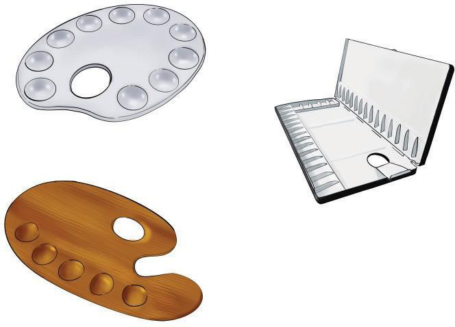

Watercolour papers: These are specifically made papers to be used for water-based paints. Watercolour papers are absorbent allowing multiple applications of colours without being distorted. These papers have different textures. Some are smooth while others are rough.
Palette: This is an instrument which an artist uses to hold and mix colours before applying them to paint. Most palettes are made of plastic, wood or aluminium materials. They are water resistant, allowing easy removal of paint as well as supporting efficient mixing of colours. Figure 3.2 shows different types of palettes.

Towel: This can be a piece of cloth, sponge or tissue that is often used for drying brushes, wiping painting surfaces, cleaning up spills and drying hands. Figure 3.3 shows a sponge and paper towels.